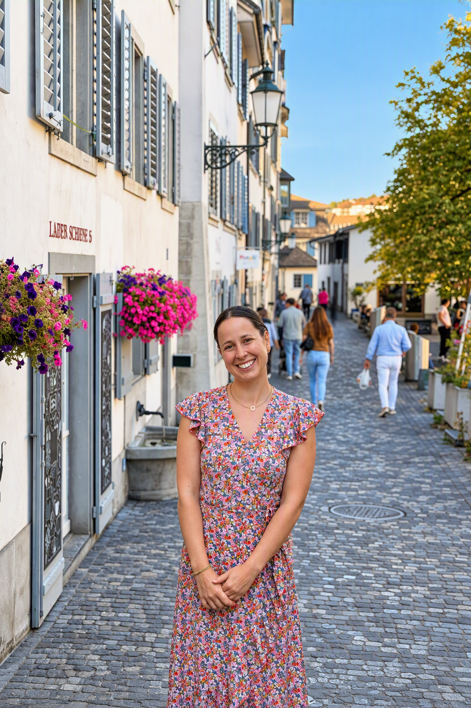
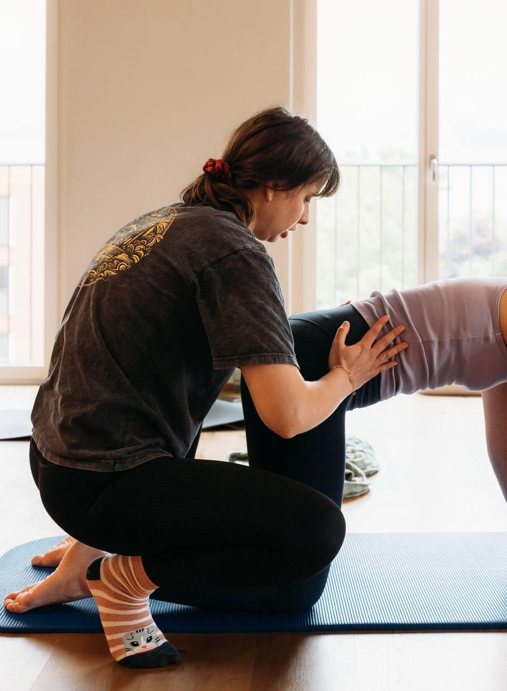

A Space for Becoming
A compassionate space to feel held, heard and connected to yourself through the profound transitions of motherhood.
Based in Zurich, I offer personalised doula care to families across the region, rooted in presence, trust and continuity. Through emotional and practical support, intuitive birth preparation, Rebozo work and compassionate companionship, I honour your individual experience and offer a steady, caring presence as you find your own way through motherhood.
Currently completing my professional doula training.

What Brought Me Here
My path towards doula work grew from experiences close to my heart. Seeing the challenges women can face during pregnancy, and how little support may be available when they experience the loss of a baby, made me reflect deeply on the importance of feeling held, heard and understood during these moments.
My own experiences have also changed the way I see life and what truly matters to me. They have deepened my empathy and strengthened my desire to be present for others in a meaningful way.
Today, I feel drawn to creating a space where women and their partners feel seen, heard and supported without judgement. A space where emotions are welcome, individual experiences are honoured, and both can feel accompanied through the profound transitions of becoming parents.

spa"Every woman carries her own wisdom; I am here to hold space for her to discover, trust, and embrace it."
— Anne Meroni, Founder · Verea WithinThe Heart of My Practice
I see motherhood as a profound transformation, one that unfolds differently for every woman. There is no single way to experience it, only your own. For me, meaningful support begins with listening before advising, creating space rather than filling it, and honouring the wisdom each woman carries within herself.
My approach is gentle, intuitive and grounded in presence. Through my doula training and Rebozo practice, I bring together touch, movement, grounding and emotional support to care for both the body and the woman behind the experience. I meet you where you are, honouring your story, your culture, your choices and what matters most to you.
Intuitive Physical Comfort
Gentle Rebozo techniques, supportive positioning, counterpressure and movement to encourage comfort, relaxation and connection with your body throughout labour.
A Calm and Supported Birth Space
Creating a sense of calm, privacy and reassurance through a gentle presence, mindful breathing and an environment that respects your needs and preferences.
Informed and Empowered Choices
Helping you explore your options, prepare questions and understand birth-related information so you and your partner can approach decisions with greater clarity and confidence.
Partner Support & Connection
Offering your partner practical guidance and reassurance, helping you both feel confident, connected and supported as you navigate birth together.
Ready to Begin Your Journey Together?
Book your complimentary 30-minute first consultation — no obligation, just a calm conversation.